分茶 Caupona
共 323 个条目 · caupona
版本: ${file.jarVersion} · 来源: Caupona-1.21.1-0.5.6.jar
A mod brings immersive cook and decoration to minecraft
MC百科中文名: 分茶
MC百科页面: https://www.mcmod.cn/class/7154.html（分茶 (Caupona)）
官方介绍 （Modrinth · 联网获取）
Caupona
An immersive gecko-roman style food cuisine mod base on heat
Intro
Based on heat, we provide a highly free food cuisine system as well as useful utilities.
We designed Thermopolium earlier, but it's a sketch just described our principle, and without a very playable core. we decide to design a new mod that extends our principle of real and free cooking and still based on the core of food cuisine. This comes out as caupona. PS: Caupona and Thermopolium are both independent, their contents won't be migrate to each other.
Aside cooking, we also added a hypocaust bath system.
We support patchouli books and JEI.
A new major update version 0.4 for 1.19.2 and above!
We do a lot of user survey and added some new interesting features:
Lead, a brand new mid-game material with a special ability to grant a special effect into foods. And is obtained in a special way! Silphium, a new kind of rare plant a yield a powerful spice! Road blocks, increasing your sprinting speed to significantly high! And with a special mechanic to avoid running out of road! Snails, a brand new food serve as crustacens in recipes, with a interesting way to raise them. Situla for easier stew and fluid transport with the same capacity with pots and dolium. Skimmer Did something wrong and made your stew uncookable? here's an undo key! Remove ingredients from existing stews. Redstone ladle, Greatly simplifies fluid and food transportation with vanilla dispensers. Item texture resource reworked! Added new texture for cookwares and so on. Stew now has a more realistic texture!
** The following message can be found in patchouli book in-game wiki. **
Content Description
Worldgen
Plants
From left to right: fig tree, wolfberry tree, walnut tree. They are located in plains, hills and forest. Fig and wolfberry tree are bush, they don't produce wood and only yield sticks. Walnut has corresponding wood, planks and a serie of wooden products. They would grow fruits under their leaves. Fig is fruit and wolfberry is berry. Walnut serves as oil crops
Volcanic Fumarole
Generates in desert and extreme hills, consists of a small basalt plate, a fumarole vent and some decorative fumarole boulder. The second block below it decides its properties. If lava, it would generate pumice bloom on nearby water and provides heat. If magma block, it would provide heat but have no other effects. If others, it have no effect. Natural volcanic fumarole can be one of above. fumarole vent should be picked with silk touch, or it would drop basalt instead.
Building Materials
This mod provides a few new building materials, they are: mixed bricks, walnut planks, opus reticulatum, felsic tuff bricks, fumarole bloom, thin brick(crafting material), opus latericium, opus incertum, felsic tuff, pumice. Except pumice, pumice bloom and thin bricks as material, they all have slab, stair and wall variant. Pumice is gathered from picking pumice bloom.
And three different types of Greko-Roman columns are provided. They have variants of felsic tuff, calcite, stone or quartz.
Five different types of kitchen materials: stone bricks, opus latericium, opus incertum, bricks and mud. Kitchen counter serves as decoration but other blocks have different use.
Cooking
Stove
Stoves are basic heat providing device. Their appearance would change depend on its fuel. Both stoves and volcanic fumarole serves as heat source, but their heat level is different. Heat level decides how fast heat consuming device would work.
Stew Pot
Stew pot is a cooking device only needed to provide ingredient and fluid to cook stews. Raw ingredients supported and they would be cook automatically. Basically, recipes only decide stews' appearance and have no extra effect, actual effect only depends on the ingredients. Specially, Stock based stews can become aspics when left still for a long time. Cooking foods into soup can provide a relatively high saturation modifier depends on its concerntration. Potions can also added to stews in cooking. Stews can be re-cooked as many as you wish, if you are not satisfy with it and wanted to make something else.Use container at stew pots to drain fluid inside, while sneak and use with empty hand clear its fluid contents.
Aspic and Portable Brazier
Aspics are useful in storing or carring stews, they are not edible. Cook and thaw them in stew pots or portable brazier to turn it back to soup. Turning aspics to soup or soups to aspics preserves its effects.
Portable Brazier requires water bowl and portable fuel(vivid charcoal, magma cream, etc) to melt aspics back to soup. However, stew pot does not need water to perform this operation.
Frying Pan
With frying pans, you can make stir fry. Frying requires oil in gravy boats beside the pan, and enough containers(bowl). About two ingredients turns into a dish. Still, frying can cook raw ingredient. Pans can be made of stone, copper or iron. They have no major difference. Frying would provide moderate saturation modifier and cooks much faster than cooking stew. But potion can not be added and you can't re-cook any dish.
Dolium
Counter with dolium can store a small amount of liquids.
It can also handle resting convertion. It takes 600s to perform an action. But it would produce as much as it can in one single time. Resting convertion includes aspic making. However, recipes without extra ingredient like stew to aspic can also done with stew pot. If stews stored inside dolium, spices can be added during draining stew.
Spice
Spices are spice in flower pot, they are made of materials above. They are chives, garum, vinegar, sugar. Adding spice into stews or sauteed food can add an short extra potion effect onto it. If stews with spice are re-cooked, they lost their spice.
Decoration
Sneak+use to place dishes on the world. Use at placed dishes to eat them. Also, pots and pans would show their contents.
Chimneys consists of vertical placed chimney flues and an optional chimney pot at the top. Their length is varied and materials does not need to match. It can transfer smoke from stoves or other smoking device. It can transfer smoke from smoking devices in 3 blocks below it. But there shouldn't be any solid blocks between them. When used with stove, chimney pot above it can gradually accumulates ash, that can use as a material for dyes. Use shovels to gather them.
Hypocaust Bathing
Hypocaust blocks, the left four are hypocaust firebox, others are hypocaust caliduct.
Hypocaust firebox accept heat from heat sources and propagates heat to caliducts in a 9x9 area. Their materials don't need to be match. And chimney can transfer smoke from hypocaust firebox. Hypocaust blocks heat water on it and turns them into bath water and steam coming out from it. Players stay inside bath water can gradually gain experience.
Copper wolf statue is some sort of thermometer. It's appearance changes depend on its temperature, it can tell temperature of stoves or hypocaust blocks. When using as hypocaust thermometer, they don't have to placed right on it, but somewhere above it, blocks between wolf statue and hypocaust blocks doesn't matters.
Automation and Redstone support
Dispenser support
Stew pots and pans can be set to redstone control, a single signal would cause it to work for once. Since its bottom should be heated by heat source, so hoppers is useless in taking out its products. So we introduce dispenser support.Dispenser support: With bowls inside, it can drain fluid from pots or world, and draw output from pans. With fluid buckets or bowl of stew inside, it can pour the fluid into stew pots or doliums. With gravy boats inside, it can replace the gravy boat in the world to one in its inventory. With spice inside, it would replace spice inside the device with the one inside its inventory. With flower pot inside, it would take out spice from the device.
Comparator support
Full dishes emits signal, while empty ones does not. Gravy bot emits signal based on how much use remaining, 3 for each use. Stew pots emits signal only when it is idle. It outputs sum of ingredient and bowls of liquids inside, plus 1. Pans emits signal only when it is idle. It outputs sum of ingredient plus 1. If its output slots are blocked, outputs 15. Wolf statue emits signal based on its heat level, if directly heated by stove, output 9. And the value would add 3 for each heat level.
Mod Support
- Farmers' delight
- simple farming
- crock pot
- and other mod ingrendients with proper food tags.
Datapack and Extension support
All of our recipes and process can be changed or added through datapack. Most of features are configurable. We have a tag based system and it's easy to make new supports. We also have many convenient apis to get things work.
Author
This project are presented by Teammoeg members:
Developer: khjxiaogu
Artist: Lyuuke
Contacts
Official QQ group: 323355312
Official Discord:https://discord.gg/5sT8M4ds
Modpack usage
Feel free to use this mod in any of modpacks, or modify for specific use.
资料来源：Caupona（自动匹配，仅供参考）
物品与方块
 面包汤
面包汤caupona:acquacotta · 物品?面包碗盛面包汤
caupona:acquacotta_loaf · 物品无限制
caupona:any_based · 物品
 阿魏
阿魏caupona:asafoetida · 物品
 调料罐: 阿魏
调料罐: 阿魏caupona:asafoetida_spice_jar · 物品
 阿斯铜币
阿斯铜币caupona:asses · 物品
 竹笊篱
竹笊篱caupona:bamboo_skimmer · 物品
 玄武岩马赛克石片
玄武岩马赛克石片caupona:basalt_tesserae · 物品
 海鲜浓汤
海鲜浓汤caupona:bisque · 物品
 海鲜浓汤冻
海鲜浓汤冻caupona:bisque_aspic · 物品
 面包碗盛海鲜浓汤
面包碗盛海鲜浓汤caupona:bisque_loaf · 物品
 骨胶
骨胶caupona:bone_gelatin · 物品?面包碗盛骨胶
caupona:bone_gelatin_loaf · 物品分茶清供
caupona:book · 物品
 罗宋汤
罗宋汤caupona:borscht · 物品
 罗宋汤冻
罗宋汤冻caupona:borscht_aspic · 物品
 奶油罗宋汤
奶油罗宋汤caupona:borscht_cream · 物品?面包碗盛奶油罗宋汤
caupona:borscht_cream_loaf · 物品
 面包碗盛罗宋汤
面包碗盛罗宋汤caupona:borscht_loaf · 物品
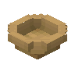
碗caupona:bowl · 方块
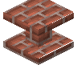
红砖地暖隔层caupona:brick_caliduct · 方块
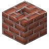
红砖烟道caupona:brick_chimney_flue · 方块
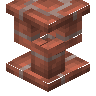
红砖烟囱帽caupona:brick_chimney_pot · 方块
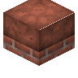
红砖台面caupona:brick_counter · 方块
 嵌陶缸的红砖台面
嵌陶缸的红砖台面caupona:brick_counter_with_dolium · 方块
 红砖地暖炉膛
红砖地暖炉膛caupona:brick_hypocaust_firebox · 方块
 红砖灶台
红砖灶台caupona:brick_kitchen_stove · 方块
 红砖马赛克石片
红砖马赛克石片caupona:brick_tesserae · 物品
 带叶纹浮雕的方解石柱头
带叶纹浮雕的方解石柱头caupona:calcite_acanthine_column_capital · 方块
 带槽饰的方解石柱座
带槽饰的方解石柱座caupona:calcite_column_fluted_plinth · 方块
 带槽饰的方解石柱身
带槽饰的方解石柱身caupona:calcite_column_fluted_shaft · 方块
 方解石柱座
方解石柱座caupona:calcite_column_plinth · 方块
 方解石柱身
方解石柱身caupona:calcite_column_shaft · 方块
 伊奥尼亚式方解石柱头
伊奥尼亚式方解石柱头caupona:calcite_ionic_column_capital · 方块
 方解石井口天花砖
方解石井口天花砖caupona:calcite_lacunar_tile · 方块
 方解石米字栏板
方解石米字栏板caupona:calcite_spoked_fence · 方块
 托斯卡纳式方解石柱头
托斯卡纳式方解石柱头caupona:calcite_tuscan_column_capital · 方块
 调料罐: 葱
调料罐: 葱caupona:chives_spice_jar · 物品§d调料罐: 宙蒸
caupona:chronoconis · 物品
 黏土缸
黏土缸caupona:clay_cistern · 物品
 黏土便携式火盆
黏土便携式火盆caupona:clay_portable_brazier · 物品
 米粥
米粥caupona:congee · 物品?面包碗盛米粥
caupona:congee_loaf · 物品
 铜制煎锅
铜制煎锅caupona:copper_frying_pan · 方块
 奶油炖肉
奶油炖肉caupona:cream_of_meat_soup · 物品?面包碗盛奶油炖肉
caupona:cream_of_meat_soup_loaf · 物品
 奶油蘑菇汤
奶油蘑菇汤caupona:cream_of_mushroom_soup · 物品?面包碗盛奶油蘑菇汤
caupona:cream_of_mushroom_soup_loaf · 物品灶间的热霾
caupona:culinary_heat_haze · 物品
 奶黄
奶黄caupona:custard · 物品?面包碗盛奶黄
caupona:custard_loaf · 物品
 稀汤
稀汤caupona:dilute_soup · 物品
 稀汤冻
稀汤冻caupona:dilute_soup_aspic · 物品?面包碗盛稀汤
caupona:dilute_soup_loaf · 物品
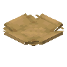
盘caupona:dish · 方块
 蛋花汤
蛋花汤caupona:egg_drop_soup · 物品
 蛋花汤冻
蛋花汤冻caupona:egg_drop_soup_aspic · 物品
 面包碗盛蛋花汤
面包碗盛蛋花汤caupona:egg_drop_soup_loaf · 物品
 糖水蛋
糖水蛋caupona:egg_tongsui · 物品?面包碗盛糖水蛋
caupona:egg_tongsui_loaf · 物品
 长英质凝灰岩
长英质凝灰岩caupona:felsic_tuff · 方块
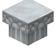
带叶纹浮雕的长英质凝灰岩柱头caupona:felsic_tuff_acanthine_column_capital · 方块
 长英质凝灰岩砖
长英质凝灰岩砖caupona:felsic_tuff_bricks · 方块
 长英质凝灰岩砖台阶
长英质凝灰岩砖台阶caupona:felsic_tuff_bricks_slab · 方块
 长英质凝灰岩砖楼梯
长英质凝灰岩砖楼梯caupona:felsic_tuff_bricks_stairs · 方块
 长英质凝灰岩砖墙
长英质凝灰岩砖墙caupona:felsic_tuff_bricks_wall · 方块
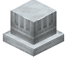
带槽饰的长英质凝灰岩柱座caupona:felsic_tuff_column_fluted_plinth · 方块
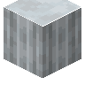
带槽饰的长英质凝灰岩柱身caupona:felsic_tuff_column_fluted_shaft · 方块
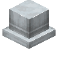
长英质凝灰岩柱座caupona:felsic_tuff_column_plinth · 方块
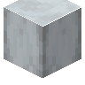
长英质凝灰岩柱身caupona:felsic_tuff_column_shaft · 方块
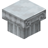
伊奥尼亚式长英质凝灰岩柱头caupona:felsic_tuff_ionic_column_capital · 方块
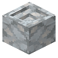
长英质石灰岩井口天花砖caupona:felsic_tuff_lacunar_tile · 方块
 长英质凝灰岩路面
长英质凝灰岩路面caupona:felsic_tuff_road · 方块
 长英质凝灰岩路面 (带路缘)
长英质凝灰岩路面 (带路缘)caupona:felsic_tuff_road_side · 方块
 长英质凝灰岩台阶
长英质凝灰岩台阶caupona:felsic_tuff_slab · 方块
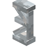
长英质凝灰岩米字栏板caupona:felsic_tuff_spoked_fence · 方块
 长英质凝灰岩楼梯
长英质凝灰岩楼梯caupona:felsic_tuff_stairs · 方块
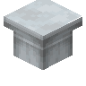
托斯卡纳式长英质凝灰岩柱头caupona:felsic_tuff_tuscan_column_capital · 方块
 长英质凝灰岩墙
长英质凝灰岩墙caupona:felsic_tuff_wall · 方块
 无花果
无花果caupona:fig · 物品
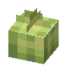
无花果caupona:fig_fruits · 方块
 无花果树叶
无花果树叶caupona:fig_leaves · 方块
 无花果原木
无花果原木caupona:fig_log · 方块
 无花果树苗
无花果树苗caupona:fig_sapling · 方块
 海鲜杂烩汤
海鲜杂烩汤caupona:fish_chowder · 物品?面包碗盛海鲜杂烩汤
caupona:fish_chowder_loaf · 物品
 鱼汤
鱼汤caupona:fish_soup · 物品
 鱼汤冻
鱼汤冻caupona:fish_soup_aspic · 物品
 面包碗盛鱼汤
面包碗盛鱼汤caupona:fish_soup_loaf · 物品
 枸杞叶
枸杞叶caupona:fresh_wolfberry_leaves · 物品
 白汁炖肉
白汁炖肉caupona:fricassee · 物品?面包碗盛白汁炖肉
caupona:fricassee_loaf · 物品
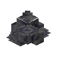
火山喷气孔石块caupona:fumarole_boulder · 方块
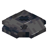
火山喷气孔caupona:fumarole_vent · 方块
 调料罐: 鱼露
调料罐: 鱼露caupona:garum_spice_jar · 物品
 枸杞糖水
枸杞糖水caupona:goji_tongsui · 物品?面包碗盛枸杞糖水
caupona:goji_tongsui_loaf · 物品
 红烩牛肉
红烩牛肉caupona:goulash · 物品
 红烩牛肉汤冻
红烩牛肉汤冻caupona:goulash_aspic · 物品
 面包碗盛红烩牛肉
面包碗盛红烩牛肉caupona:goulash_loaf · 物品
 油舟
油舟caupona:gravy_boat · 方块
 麦粥
麦粥caupona:gruel · 物品?面包碗盛麦粥
caupona:gruel_loaf · 物品
 杂烩汤
杂烩汤caupona:hodgepodge · 物品
 杂烩汤冻
杂烩汤冻caupona:hodgepodge_aspic · 物品
 面包碗盛杂烩汤
面包碗盛杂烩汤caupona:hodgepodge_loaf · 物品鹦鹉蛋
caupona:huevos_pericos · 物品面包碗盛鹦鹉蛋
caupona:huevos_pericos_loaf · 物品
 铁制煎锅
铁制煎锅caupona:iron_frying_pan · 方块
 铁笊篱
铁笊篱caupona:iron_skimmer · 物品
 厨具架
厨具架caupona:kitchen_rail · 方块
 三角砖
三角砖caupona:lateres · 物品
 铅块
铅块caupona:lead_block · 方块
 镀铅煎锅
镀铅煎锅caupona:lead_frying_pan · 方块
 铅锭
铅锭caupona:lead_ingot · 物品
 铅粒
铅粒caupona:lead_nugget · 物品
 铅制汤锅
铅制汤锅caupona:lead_stew_pot · 方块
 铅灰核桃
铅灰核桃caupona:leaden_walnut · 物品
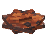
密陀僧华caupona:litharge_bloom · 方块
 密陀僧饼
密陀僧饼caupona:litharge_cake · 物品
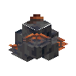
富铅火山喷气孔石块caupona:litharge_fumarole_boulder · 方块
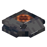
富铅火山喷气孔caupona:litharge_fumarole_vent · 方块
 面包轮
面包轮caupona:loaf · 方块
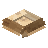
面包碗caupona:loaf_bowl · 方块
 大面团
大面团caupona:loaf_dough · 方块
 面包块
面包块caupona:loaf_heap · 方块
 面包台阶
面包台阶caupona:loaf_heap_slab · 方块
 面包楼梯
面包楼梯caupona:loaf_heap_stairs · 方块?面包墙
caupona:loaf_heap_wall · 方块
 肉汤
肉汤caupona:meat_soup · 物品
 肉汤冻
肉汤冻caupona:meat_soup_aspic · 物品
 面包碗盛肉汤
面包碗盛肉汤caupona:meat_soup_loaf · 物品
 牛奶
牛奶caupona:milk · 物品牛奶
caupona:milk_based · 物品?面包碗盛牛奶
caupona:milk_loaf · 物品
 混合红砖
混合红砖caupona:mixed_bricks · 方块
 混合红砖台阶
混合红砖台阶caupona:mixed_bricks_slab · 方块
 混合红砖楼梯
混合红砖楼梯caupona:mixed_bricks_stairs · 方块
 混合红砖墙
混合红砖墙caupona:mixed_bricks_wall · 方块马赛克砖
caupona:mosaic · 方块
 夯土干砌石烟道
夯土干砌石烟道caupona:mud_chimney_flue · 方块
 夯土干砌石烟囱帽
夯土干砌石烟囱帽caupona:mud_chimney_pot · 方块
 夯土干砌石台面
夯土干砌石台面caupona:mud_counter · 方块
 嵌陶缸的夯土干砌石台面
嵌陶缸的夯土干砌石台面caupona:mud_counter_with_dolium · 方块
 夯土干砌石灶台
夯土干砌石灶台caupona:mud_kitchen_stove · 方块
 蘑菇汤
蘑菇汤caupona:mushroom_soup · 物品
 蘑菇汤冻
蘑菇汤冻caupona:mushroom_soup_aspic · 物品
 面包碗盛蘑菇汤
面包碗盛蘑菇汤caupona:mushroom_soup_loaf · 物品
 钉子汤
钉子汤caupona:nail_soup · 物品?面包碗盛钉子汤
caupona:nail_soup_loaf · 物品
 荨麻汤
荨麻汤caupona:nettle_soup · 物品
 荨麻汤冻
荨麻汤冻caupona:nettle_soup_aspic · 物品
 面包碗盛荨麻汤
面包碗盛荨麻汤caupona:nettle_soup_loaf · 物品
 蔬菜冻汤
蔬菜冻汤caupona:okroshka · 物品?面包碗盛蔬菜冻汤
caupona:okroshka_loaf · 物品
 片石饰面混凝土
片石饰面混凝土caupona:opus_incertum · 方块
 片石饰面混凝土地暖隔层
片石饰面混凝土地暖隔层caupona:opus_incertum_caliduct · 方块
 片石饰面混凝土烟道
片石饰面混凝土烟道caupona:opus_incertum_chimney_flue · 方块
 片石饰面混凝土烟囱帽
片石饰面混凝土烟囱帽caupona:opus_incertum_chimney_pot · 方块
 片石饰面混凝土台面
片石饰面混凝土台面caupona:opus_incertum_counter · 方块
 嵌陶缸的片石饰面混凝土台面
嵌陶缸的片石饰面混凝土台面caupona:opus_incertum_counter_with_dolium · 方块
 片石饰面混凝土地暖炉膛
片石饰面混凝土地暖炉膛caupona:opus_incertum_hypocaust_firebox · 方块
 片石饰面混凝土灶台
片石饰面混凝土灶台caupona:opus_incertum_kitchen_stove · 方块
 片石饰面混凝土台阶
片石饰面混凝土台阶caupona:opus_incertum_slab · 方块
 片石饰面混凝土楼梯
片石饰面混凝土楼梯caupona:opus_incertum_stairs · 方块
 片石饰面混凝土墙
片石饰面混凝土墙caupona:opus_incertum_wall · 方块
 嵌砖混凝土
嵌砖混凝土caupona:opus_latericium · 方块
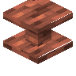
嵌砖混凝土地暖隔层caupona:opus_latericium_caliduct · 方块
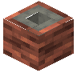
嵌砖混凝土烟道caupona:opus_latericium_chimney_flue · 方块
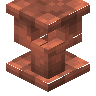
嵌砖混凝土烟囱帽caupona:opus_latericium_chimney_pot · 方块
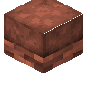
嵌砖混凝土台面caupona:opus_latericium_counter · 方块
 嵌陶缸的嵌砖混凝土台面
嵌陶缸的嵌砖混凝土台面caupona:opus_latericium_counter_with_dolium · 方块
 嵌砖混凝土地暖炉膛
嵌砖混凝土地暖炉膛caupona:opus_latericium_hypocaust_firebox · 方块
 嵌砖混凝土灶台
嵌砖混凝土灶台caupona:opus_latericium_kitchen_stove · 方块
 嵌砖混凝土台阶
嵌砖混凝土台阶caupona:opus_latericium_slab · 方块
 嵌砖混凝土楼梯
嵌砖混凝土楼梯caupona:opus_latericium_stairs · 方块
 嵌砖混凝土墙
嵌砖混凝土墙caupona:opus_latericium_wall · 方块
 锥石饰面混凝土
锥石饰面混凝土caupona:opus_reticulatum · 方块
 锥石饰面混凝土台阶
锥石饰面混凝土台阶caupona:opus_reticulatum_slab · 方块
 锥石饰面混凝土楼梯
锥石饰面混凝土楼梯caupona:opus_reticulatum_stairs · 方块
 锥石饰面混凝土墙
锥石饰面混凝土墙caupona:opus_reticulatum_wall · 方块肥满蜗牛
caupona:plump_snail · 物品
 磨制长英质凝灰岩砖
磨制长英质凝灰岩砖caupona:polished_felsic_tuff · 方块
 磨制长英质凝灰岩台阶
磨制长英质凝灰岩台阶caupona:polished_felsic_tuff_slab · 方块
 磨制长英质凝灰岩楼梯
磨制长英质凝灰岩楼梯caupona:polished_felsic_tuff_stairs · 方块
 磨制长英质凝灰岩墙
磨制长英质凝灰岩墙caupona:polished_felsic_tuff_wall · 方块
 牛奶麦片粥
牛奶麦片粥caupona:porridge · 物品?面包碗盛牛奶麦片粥
caupona:porridge_loaf · 物品
 便携式火盆
便携式火盆caupona:portable_brazier · 物品?炉灰
caupona:pot_ash · 物品
 禽肉汤
禽肉汤caupona:poultry_soup · 物品
 禽肉汤冻
禽肉汤冻caupona:poultry_soup_aspic · 物品
 面包碗盛禽肉汤
面包碗盛禽肉汤caupona:poultry_soup_loaf · 物品
 浮岩
浮岩caupona:pumice · 方块
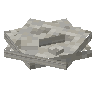
浮岩华caupona:pumice_bloom · 方块浮岩马赛克石片
caupona:pumice_tesserae · 物品
 南瓜汤
南瓜汤caupona:pumpkin_soup · 物品
 南瓜汤冻
南瓜汤冻caupona:pumpkin_soup_aspic · 物品
 奶油南瓜汤
奶油南瓜汤caupona:pumpkin_soup_cream · 物品?面包碗盛奶油南瓜汤
caupona:pumpkin_soup_cream_loaf · 物品
 面包碗盛南瓜汤
面包碗盛南瓜汤caupona:pumpkin_soup_loaf · 物品
 带叶纹浮雕的石英柱头
带叶纹浮雕的石英柱头caupona:quartz_acanthine_column_capital · 方块
 带槽饰的石英柱座
带槽饰的石英柱座caupona:quartz_column_fluted_plinth · 方块
 带槽饰的石英柱身
带槽饰的石英柱身caupona:quartz_column_fluted_shaft · 方块
 石英柱座
石英柱座caupona:quartz_column_plinth · 方块
 石英柱身
石英柱身caupona:quartz_column_shaft · 方块
 伊奥尼亚式石英柱头
伊奥尼亚式石英柱头caupona:quartz_ionic_column_capital · 方块
 石英井口天花砖
石英井口天花砖caupona:quartz_lacunar_tile · 方块
 石英米字栏板
石英米字栏板caupona:quartz_spoked_fence · 方块
 托斯卡纳式石英柱头
托斯卡纳式石英柱头caupona:quartz_tuscan_column_capital · 方块
 红石勺
红石勺caupona:redstone_ladle · 物品
 米布丁
米布丁caupona:rice_pudding · 物品?面包碗盛米布丁
caupona:rice_pudding_loaf · 物品
 砂岩路面
砂岩路面caupona:sandstone_road · 方块
 砂岩路面 (带路缘)
砂岩路面 (带路缘)caupona:sandstone_road_side · 方块调料罐: 含铅糖浆
caupona:sapa_spice_jar · 物品嫩煎牛肉
caupona:sauteed_beef · 物品面包碗盛嫩煎牛肉
caupona:sauteed_beef_loaf · 物品炒绿叶蔬菜
caupona:sauteed_greens · 物品面包碗盛炒绿叶蔬菜
caupona:sauteed_greens_loaf · 物品杂烩
caupona:sauteed_hodgepodge · 物品面包碗盛杂烩
caupona:sauteed_hodgepodge_loaf · 物品嫩煎肉
caupona:sauteed_meat · 物品面包碗盛嫩煎肉
caupona:sauteed_meat_loaf · 物品炒蘑菇
caupona:sauteed_mushrooms · 物品面包碗盛炒蘑菇
caupona:sauteed_mushrooms_loaf · 物品炒根茎
caupona:sauteed_roots · 物品面包碗盛炒根茎
caupona:sauteed_roots_loaf · 物品
 嫩煎海鲜
嫩煎海鲜caupona:sauteed_seafood · 物品面包碗盛嫩煎海鲜
caupona:sauteed_seafood_loaf · 物品炒蔬菜
caupona:sauteed_vegetables · 物品面包碗盛炒蔬菜
caupona:sauteed_vegetables_loaf · 物品
 热牛奶
热牛奶caupona:scalded_milk · 物品?面包碗盛热牛奶
caupona:scalded_milk_loaf · 物品
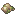
残羹caupona:scraps · 物品嫩煎鱼
caupona:seared_fillet · 物品面包碗盛嫩煎鱼
caupona:seared_fillet_loaf · 物品嫩煎禽肉
caupona:seared_poultry · 物品面包碗盛嫩煎禽肉
caupona:seared_poultry_loaf · 物品
 海带汤
海带汤caupona:seaweed_soup · 物品
 海带汤冻
海带汤冻caupona:seaweed_soup_aspic · 物品
 面包碗盛海带汤
面包碗盛海带汤caupona:seaweed_soup_loaf · 物品
 巫洛阿魏
巫洛阿魏caupona:silphium · 方块
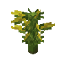
巫洛阿魏caupona:silphium_block · 方块
 盂
盂caupona:situla · 物品蜗牛
caupona:snail · 物品
 蜗牛诱饵
蜗牛诱饵caupona:snail_bait · 方块
 蜗牛卵
蜗牛卵caupona:snail_block · 方块
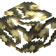
蜗牛黏液caupona:snail_mucus · 方块
 炱
炱caupona:soot · 物品?Spice Jar
caupona:spice_jar · 物品
 陶制汤锅
陶制汤锅caupona:stew_pot · 方块
 高汤
高汤caupona:stock · 物品
 高汤冻
高汤冻caupona:stock_aspic · 物品高汤
caupona:stock_based · 物品
 面包碗盛高汤
面包碗盛高汤caupona:stock_loaf · 物品
 带叶纹浮雕的石柱头
带叶纹浮雕的石柱头caupona:stone_acanthine_column_capital · 方块
 石砖地暖隔层
石砖地暖隔层caupona:stone_brick_caliduct · 方块
 石砖烟道
石砖烟道caupona:stone_brick_chimney_flue · 方块
 石砖烟囱帽
石砖烟囱帽caupona:stone_brick_chimney_pot · 方块
 石砖台面
石砖台面caupona:stone_brick_counter · 方块
 嵌陶缸的石砖台面
嵌陶缸的石砖台面caupona:stone_brick_counter_with_dolium · 方块
 石砖地暖炉膛
石砖地暖炉膛caupona:stone_brick_hypocaust_firebox · 方块
 石砖灶台
石砖灶台caupona:stone_brick_kitchen_stove · 方块
 带槽饰的石柱座
带槽饰的石柱座caupona:stone_column_fluted_plinth · 方块
 带槽饰的石柱身
带槽饰的石柱身caupona:stone_column_fluted_shaft · 方块
 石柱座
石柱座caupona:stone_column_plinth · 方块
 石柱身
石柱身caupona:stone_column_shaft · 方块
 石鏊
石鏊caupona:stone_griddle · 方块
 伊奥尼亚式石柱头
伊奥尼亚式石柱头caupona:stone_ionic_column_capital · 方块
 石井口天花砖
石井口天花砖caupona:stone_lacunar_tile · 方块
 石路面
石路面caupona:stone_road · 方块
 石路面 (带路缘)
石路面 (带路缘)caupona:stone_road_side · 方块
 石米字栏板
石米字栏板caupona:stone_spoked_fence · 方块
 托斯卡纳式石柱头
托斯卡纳式石柱头caupona:stone_tuscan_column_capital · 方块
 蔬菜蛋花汤
蔬菜蛋花汤caupona:stracciatella · 物品
 蔬菜蛋花汤冻
蔬菜蛋花汤冻caupona:stracciatella_aspic · 物品
 面包碗盛蔬菜蛋花汤
面包碗盛蔬菜蛋花汤caupona:stracciatella_loaf · 物品
 去皮核桃原木
去皮核桃原木caupona:stripped_walnut_log · 方块
去皮核桃木caupona:stripped_walnut_wood · 方块
 调料罐: 糖
调料罐: 糖caupona:sugar_spice_jar · 物品
 马赛克工作台
马赛克工作台caupona:tessellation_workbench · 方块
 乌哈汤
乌哈汤caupona:ukha · 物品?乌哈汤冻
caupona:ukha_aspic · 物品?面包碗盛乌哈汤
caupona:ukha_loaf · 物品?Vade Mecum For Innkeepers
caupona:vade_mecum_for_innkeepers · 物品
 奶油蔬菜汤
奶油蔬菜汤caupona:vegetable_chowder · 物品?面包碗盛奶油蔬菜汤
caupona:vegetable_chowder_loaf · 物品
 蔬菜汤
蔬菜汤caupona:vegetable_soup · 物品
 蔬菜汤冻
蔬菜汤冻caupona:vegetable_soup_aspic · 物品
 面包碗盛蔬菜汤
面包碗盛蔬菜汤caupona:vegetable_soup_loaf · 物品
 调料罐: 醋
调料罐: 醋caupona:vinegar_spice_jar · 物品
 鲜活木炭
鲜活木炭caupona:vivid_charcoal · 物品
 核桃
核桃caupona:walnut · 物品核桃木船
caupona:walnut_boat · 物品
 核桃木按钮
核桃木按钮caupona:walnut_button · 方块
 核桃木门
核桃木门caupona:walnut_door · 方块
 核桃木栅栏
核桃木栅栏caupona:walnut_fence · 方块
 核桃木栅栏门
核桃木栅栏门caupona:walnut_fence_gate · 方块
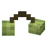
核桃caupona:walnut_fruits · 方块
 悬挂式核桃木告示牌
悬挂式核桃木告示牌caupona:walnut_hanging_sign · 方块
 核桃树叶
核桃树叶caupona:walnut_leaves · 方块
 核桃原木
核桃原木caupona:walnut_log · 方块?核桃油
caupona:walnut_oil · 物品
 核桃木板
核桃木板caupona:walnut_planks · 方块
 核桃木压力板
核桃木压力板caupona:walnut_pressure_plate · 方块
 核桃树苗
核桃树苗caupona:walnut_sapling · 方块
 核桃木告示牌
核桃木告示牌caupona:walnut_sign · 方块
 核桃木台阶
核桃木台阶caupona:walnut_slab · 方块
 核桃露
核桃露caupona:walnut_soup · 物品?面包碗盛核桃露
caupona:walnut_soup_loaf · 物品
 核桃木楼梯
核桃木楼梯caupona:walnut_stairs · 方块
 核桃木活板门
核桃木活板门caupona:walnut_trapdoor · 方块
核桃木caupona:walnut_wood · 方块
 水
水caupona:water · 物品?面包碗盛水
caupona:water_loaf · 物品水或高汤
caupona:water_or_stock_based · 物品
 狼雕像
狼雕像caupona:wolf_statue · 方块
 枸杞
枸杞caupona:wolfberries · 物品
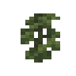
枸杞caupona:wolfberry_fruits · 方块
 枸杞树叶
枸杞树叶caupona:wolfberry_leaves · 方块
 枸杞原木
枸杞原木caupona:wolfberry_log · 方块
 枸杞树苗
枸杞树苗caupona:wolfberry_sapling · 方块